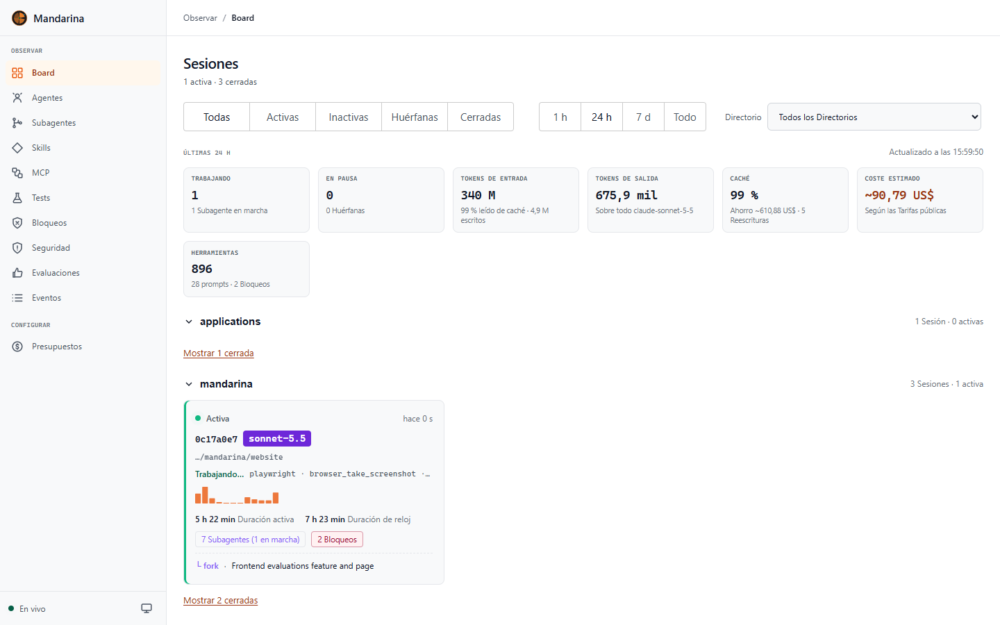
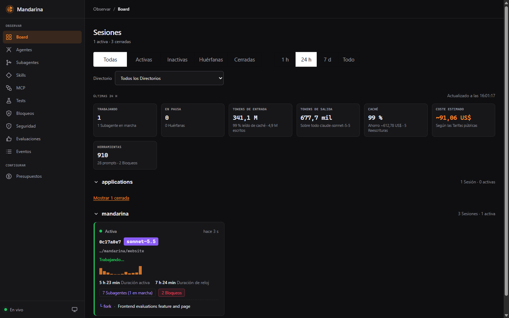
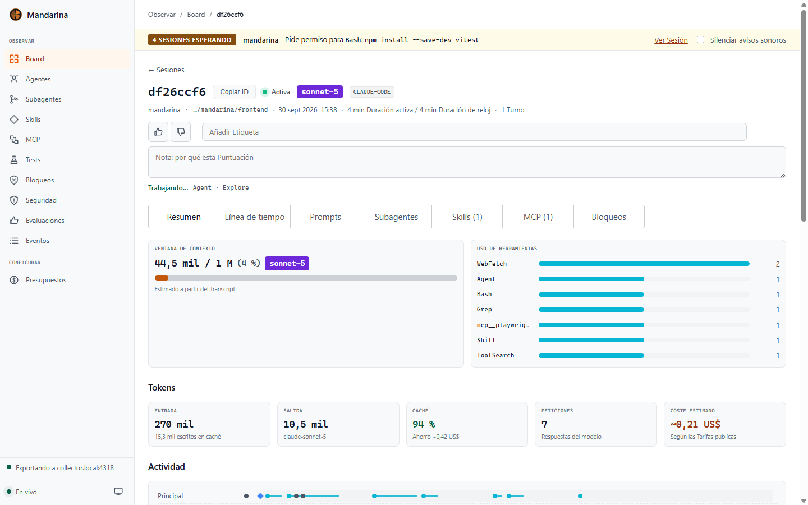
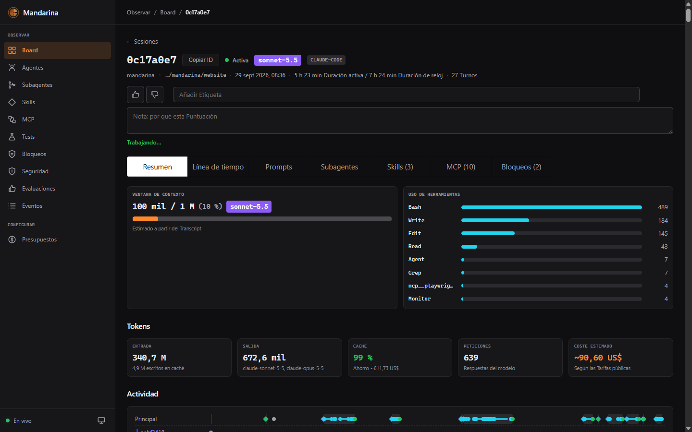

Observabilidad de Agentes IA para Claude Code & Harnesses Autónomos
Capa de observabilidad pasiva y desacoplada 100% local para Claude Code, Codex CLI, Cursor y OpenCode. Stack Angular SPA (Signals) y Node.js con SQLite WAL, WebSockets en tiempo real, sin fugas en la nube y control preventivo de costes.
curl -sSL https://get.mandarina.sh | bash && docker compose up -d
El Cockpit Definitivo para Agentes Claude Code
Traza ejecuciones de Bash, inspecciona forks de agentes en árbol y monitorea la saturación del contexto de 1M tokens sin tocar la nube.




Seis Pilares de Observabilidad para Claude Code
Sin proxy intermedio lento, sin riesgo de fugas de propiedad intelectual y sin facturas sorpresa de telemetría.
Ingesta Normalizada & WebSocket en Vivo
Pipeline de hooks -> send_event.mjs HTTP POST -> Backend Node.js -> SQLite WAL -> Push WebSocket en <2ms. Multi-harness agnóstico (Claude, Codex, Cursor).
Observador de Agentes & Subagentes
Árbol jerárquico con perfil por tipo de subagente (fork, security-gate, test runner), métricas de duración, consumo de tokens, coste y linaje de quién lanza a quién.
Eficiencia de Caché de Prompts & Desglose
Cálculo de tasa de acierto de caché, ahorro neto en dólares, sobrecoste de escritura y diagnóstico de reescrituras (caducadas, cambio entre Sonnet y Opus).
Presupuestos & Control de Parada
Límites de gasto configurables por sesión, proyecto y día. Hook preventivo que intercepta y detiene la ejecución del agente (continue: false) si se supera el umbral.
Enmascarado de Secretos, PII & Inyecciones
Detección en tiempo real de JWT, claves PEM, contraseñas y PII con algoritmo de Luhn, marcadores tipados [REDACTED_*] y avisos heurísticos de inyección indirecta.
Exportación OTLP OpenInference & Tests
Trazas opt-in para Jaeger, Grafana Tempo, Langfuse y Phoenix con convención OpenInference. Sincronización directa de Vitest/Playwright y evaluación humana (+1/-1).
Arquitectura Ligera: Settings.json & Daemon UDP
Configura Claude Code en 10 segundos añadiendo el webhook local en tu configuración estándar.
{
"$schema": "https://mandarina.dev/schema/v1/event.json",
"harness": { "name": "claude-code", "version": "0.9.4" },
"session_id": "ses_0c17a0e7",
"model": { "id": "claude-3-7-sonnet", "caching": true },
"subagent": { "type": "fork", "parent_id": "root" },
"budget_policy": {
"max_usd_per_session": 15.0,
"on_limit": "halt_agent"
},
"transport": {
"collector": "http://127.0.0.1:4201/v1/events",
"adapter": "send_event.mjs (zero-dependency)"
}
}Captura hooks de Claude Code, Cursor o Codex CLI vía script mínimo o /plugin install sin inyectar binarios pesados.
Ingesta de eventos ultra-rápida en base de datos SQLite WAL local con enmascarado de secretos PII y sin salir a internet.
Cockpit reactivo impulsado por Angular Signals a 60 FPS, inspección de servidores MCP y exportación opcional OTLP OpenInference.
De v0.9 (Alpha Actual) a v1.0 Enterprise
Observabilidad local fundacional, esquema de eventos normalizado, observador de subagentes y métricas de caché.
- check_circle Ingesta normalizada multi-harness (Claude Code, Cursor, Codex)
- check_circle Observador de subagentes y linaje (forks, duración, coste)
- check_circle Métricas de caché de prompts: tasa de acierto, ahorro neto y reescrituras
- check_circle Presupuestos por sesión/proyecto con parada preventiva (continue: false)
- check_circle Enmascarado de PII/secretos, avisos de inyección y tests Vitest/Playwright
- check_circle Exportación OTLP OpenInference y evaluación humana (+1/-1)
Cabina operativa en tiempo real para desbloquear al desarrollador y supervisar fricciones del harness.
- pending_actions Bandeja de Atención Requerida (espera de permiso/input con alerta sonora)
- commit Cambios de código por sesión (visor git diff, commits y PRs vinculadas)
- compress Visor de conversación completa y compactaciones de contexto (PreCompact)
- warning Detección heurística de bucles infinitos y fricción en herramientas
- dns Mandarina como servidor MCP de solo lectura para los propios agentes
Gestión activa de configuración del proyecto, editor de reglas de seguridad y evaluación de skills.
- tune Acceso a configuración del proyecto y recomendaciones para CLAUDE.md
- psychology Editor y evaluador de skills (SKILL.md con benchmark de disparo)
- extension Gestor de plugins y marketplaces para hooks de Claude Code
- gavel Editor de reglas de bloqueo con modo auditoría y prueba en seco
El control vive donde el equipo ya colabora, el repositorio: sin SSO en la nube ni paneles multiusuario.
- policy Políticas compartidas en el repo (mandarina.yaml: presupuestos, umbrales de parada y enmascarado de PII)
- rate_review Auditoría de IA en Pull Requests: comentario automático desde CI con coste, caché y riesgos de seguridad
- query_stats Métricas agregadas anónimas: resumen semanal de ahorro y eficiencia, sin código ni datos sensibles
Un modelo modular y abierto en lugar de una orquestación rígida entre agentes de terceros.
- storefront Marketplace local de skills y hooks: instalar, actualizar y probar CLAUDE.md, skills y filtros de seguridad
- lan Mesh local P2P en LAN para compartir aprendizajes de prompts y bucles a evitar, sin servidores en la nube
- api APIs abiertas para CI/CD: herramientas internas consultan el estado de los agentes
Informes de auditoría, orquestación multi-agente y el nivel producción para servidores compartidos.
- assessment Reporting exportable, comparador de sesiones y trazabilidad de criterios de aceptación
- hub Orquestación multi-agente y delegación cruzada (Claude Code <-> Codex)
- play_circle Lanzador headless de tareas con cola, cuotas de concurrencia y HITL en UI
- badge Autenticación multiusuario SSO/OIDC y métricas de resultado por PR/commit
Despliega Mandarina en 30 Segundos
Sin cuentas en la nube, sin tarjetas de crédito y con total control de tu código fuente.
docker compose -f mandarina-stack.yml up -d && claude /plugin install mandarina